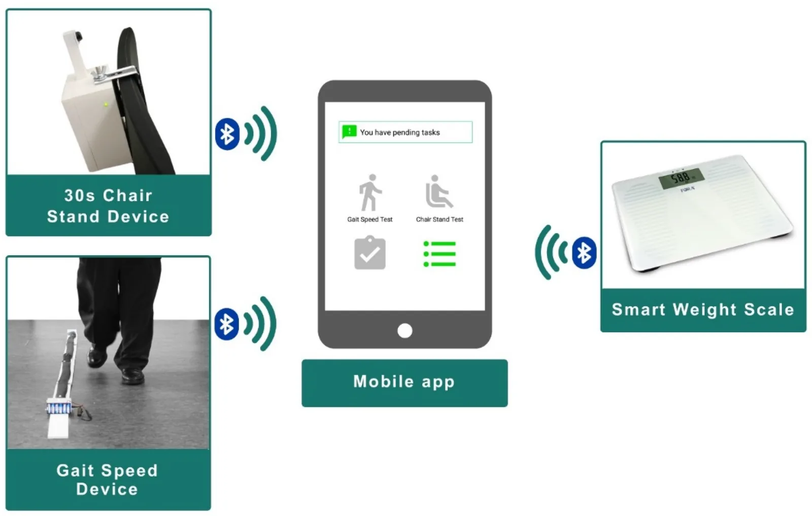
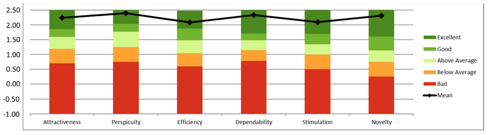

Interfaz para personas mayores en un sistema de prevención de la fragilidad
Diseñamos la interfaz de un sistema de prevención de la fragilidad pensado para personas mayores. En un estudio piloto de seis meses, la adherencia al plan de monitorización fue cercana al 100%.
Hablemos de tu proyectoDe un vistazo
- Antes
Seguimiento en visitas puntuales
En la práctica habitual, la persona solo se evalúa en consultas periódicas y no hay datos entre una visita y la siguiente.
- Ahora
Medición en casa, guiada
Un kit de tres dispositivos y una app en tableta con avisos, vídeo y voz, pensada para personas de 82 años de media y sin experiencia con tecnología.
- Resultado
- ≈100%adherencia al plan de monitorización
- 83,7/100usabilidad (escala SUS)
- Excelenteexperiencia de usuario (UEQ)
Contexto
Diseñamos la interfaz de persona mayor de un sistema de prevención de la fragilidad.
La fragilidad es un estado de declive asociado a la edad que predispone a la discapacidad y la dependencia. Detectarla a tiempo permite intervenir antes, y medir en casa la velocidad de la marcha, la fuerza de las piernas y la pérdida involuntaria de peso ayuda a hacerlo. El sistema (CAPACITY) permite que profesionales sanitarios sigan a distancia a personas prefrágiles y frágiles.
Problema
Las personas usuarias tenían 82 años de media, casi nueve de cada diez no habían pasado de estudios primarios y cerca de dos de cada tres no tenían experiencia previa con tecnología. Aun así, debían hacer ellas mismas las mediciones en casa durante meses.
Es un colectivo que suele quedar fuera del diseño de producto, y un sistema de monitorización solo aporta valor si se usa de forma continuada.
Solución
Seguimos un diseño centrado en el usuario, de forma iterativa: los prototipos se probaron primero en laboratorio, después en un entorno clínico y por último en los domicilios de las personas usuarias.
El resultado es una aplicación en tableta que avisa de cada medición pendiente, muestra un vídeo corto sobre cómo hacerla y la guía con instrucciones de voz e imágenes. Se conecta por Bluetooth a tres dispositivos: un sensor de velocidad de la marcha, un dispositivo para la prueba de levantarse de la silla en 30 segundos y una báscula inteligente. La tableta se entregó ya configurada, con una sesión de formación de una hora y una línea telefónica de soporte.
Es el tipo de trabajo que hacemos en interfaces para mayores, software a medida y desarrollo de sensores.

Resultados
Durante seis meses, 46 personas mayores prefrágiles y frágiles usaron el sistema en su domicilio. La adherencia al plan de monitorización, tanto en el uso de los sensores como en los cuestionarios, fue muy cercana o igual al 100%.
La usabilidad alcanzó una puntuación media de 83,7 sobre 100 en la escala SUS al final del estudio, y las seis categorías del cuestionario de experiencia de usuario (UEQ) se sitúan en la banda «excelente» al compararlas con un benchmark de 246 estudios.
Fuente: Pérez-Rodríguez R, Villalba-Mora E, Valdés-Aragonés M, et al. Usability, User Experience, and Acceptance Evaluation of CAPACITY: A Technological Ecosystem for Remote Follow-Up of Frailty. Sensors. 2021;21(19):6458. doi:10.3390/s21196458

Otros casos de éxito
Empieza por una conversación de treinta minutos
Cuéntanos qué necesitas y te decimos honestamente si podemos ayudarte.